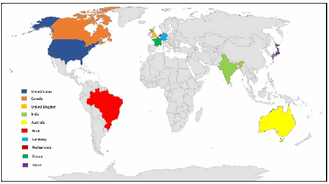
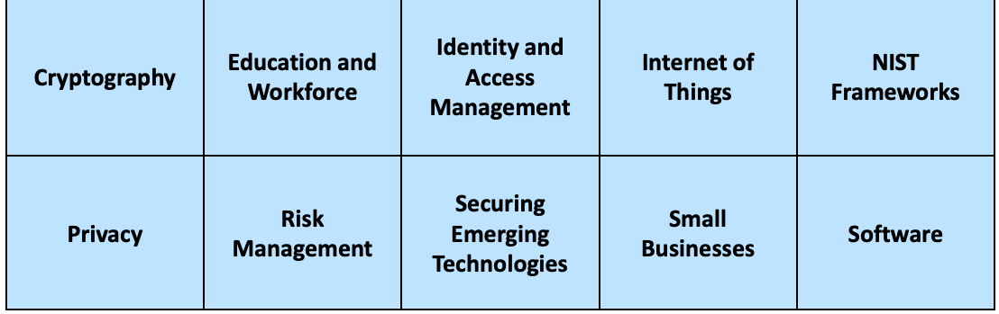

NIST Special Publication · PDF 原文抽出
Fiscal Year 2024 Annual Report for NIST Cybersecurity and Privacy Program
NIST サイバーセキュリティ・プライバシープログラム 2024 会計年度年次報告書
NIST SP 800-236（Fiscal Year 2024 Annual Report for NIST Cybersecurity and Privacy Program）の英文と日本語訳を段落ごとに並べた閲覧用ページです。NIST のサイバーセキュリティおよびプライバシープログラムの 2024 会計年度の活動をまとめた年次報告書です。 翻訳は有志による非公式のもので、NIST および米国商務省が作成・承認・推奨したものではありません。要件の確認にはNIST の正式版 PDFを参照してください。
PDF から抽出した原文は、原本のページ画像と照合済みです。
NIST Cybersecurity &
NISTサイバーセキュリティ &
Privacy Program
プライバシープログラム
FY 2024 Annual Report
2024年度年次報告書
NIST SPECIAL PUBLICATION 800-236
NIST特別刊行物 800-236
NIST Special Publication 800
NIST特別刊行物 800
NIST SP 800-236
NIST SP 800-236
Fiscal Year 2024 Annual Report for
2024会計年度 年次報告書 対象：
NIST Cybersecurity and Privacy Program
NISTサイバーセキュリティおよびプライバシープログラム
Patrick O’Reilly, Editor Computer Security Division Information Technology Laboratory
Patrick O’Reilly、編者 コンピュータセキュリティ部 情報技術研究所
Kristina Rigopoulos, Editor Applied Cybersecurity Division Information Technology Laboratory
Kristina Rigopoulos、編者 応用サイバーセキュリティ部 情報技術研究所
This publication is available free of charge from: https://doi.org/10.6028/NIST.SP.800-236
本出版物は以下より無料で入手可能です：https://doi.org/10.6028/NIST.SP.800-236
April 2025
2025年4月
［米国商務省の紋章。公的な標章のため、この非公式サイトには掲載していない。原本 PDF を参照。］
U.S. DEPARTMENT OF COMMERCE Howard Lutnick, Secretary
米国商務省 Howard Lutnick、長官
NATIONAL INSTITUTE OF STANDARDS AND TECHNOLOGY Craig Burkhardt, Acting Under Secretary of Commerce for Standards and Technology and Acting NIST Director
米国国立標準技術研究所 Craig Burkhardt、商務次官代行（標準・技術担当）兼 NIST長官代行
Table of Contents
目次
Foreword 4
まえがき 4
- PRIORITY AREAS -
- 重点分野 -
Cryptography 5
暗号技術 5
Education & Workforce 7
教育および人材育成 7
Emerging Technology 9
新興技術 9
Human-Centered Cybersecurity 11
人間中心のサイバーセキュリティ 11
Identity & Access Management 13
アイデンティティおよびアクセス管理 13
Privacy 15
プライバシー 15
Risk Management 17
リスクマネジメント 17
Trusted Networks & Platforms 19
信頼できるネットワークとプラットフォーム 19
National Cybersecurity Center of Excellence (NCCoE) 21
国立サイバーセキュリティ・センター・オブ・エクセレンス（NCCoE）21
Stakeholder Engagement & Events 24
ステークホルダーとの連携とイベント 24
FOREWORD
まえがき
Back to the future. As we look back on our past fiscal year’s work in cybersecurity and privacy, we can see the fruition of many long-standing efforts that will position us well in the changing times ahead.
未来への回帰。サイバーセキュリティとプライバシーに関する前会計年度の取り組みを振り返ると、変化の続くこれからの時代に私たちを有利な立場へ置いてくれる、長年の多くの取り組みが実を結んだことがわかる。
NIST has set foundations to ensure our security and privacy now and into the future with new quantum-resistant encryption algorithms, updates to the NIST Cybersecurity Framework, and the establishment of Artificial Intelligence programs, testbeds, and research agendas. Our research has also demonstrated practical areas that are outlined in this report with hyperlinked pointers to help you dig deeper and learn more.
NISTは、新たな耐量子暗号アルゴリズム、NISTサイバーセキュリティフレームワークの更新、人工知能プログラム、テストベッド、研究アジェンダの確立を通じて、現在および将来にわたって私たちのセキュリティとプライバシーを確保するための基盤を築いてきた。また、私たちの研究は実用的な分野も示しており、それらは本報告書で概説している。詳細を掘り下げてさらに学べるよう、ハイパーリンク付きの案内も記載している。
NIST’s work aligns with and supports many national initiatives to protect our Nation, including the National Cybersecurity Strategy and its related Implementation Plan, new policies for federal agencies from the Office of Management and Budget, initiatives from the Office of the National Cyber Director, and response actions directed by the National Security Council. NIST leads many standards-setting organizations around the world and ensures that U.S. priorities, requirements, and technologies are at the forefront of standards activities. This enables the development of products and services that meet our needs and are unquestionably secure. We are proud of and excited about the relevance and impact of our work as we continue to protect our information, economy, and way of life.
NISTの活動は、国家サイバーセキュリティ戦略とその実施計画、行政管理予算局（OMB）による連邦機関向けの新たな方針、国家サイバー長官室の取り組み、国家安全保障会議が指示する対応など、米国を保護する多くの国家的な取り組みと連携し、それらを支援している。NISTは世界各地の多くの標準化団体を主導し、米国の優先事項、要件、技術が標準化活動の最前線に位置づけられるようにしている。これにより、私たちのニーズを満たし、疑いなく安全な製品やサービスの開発が可能になる。私たちは、情報、経済、生活様式を守り続けるなかで、自らの活動の意義と影響を誇りに思い、また期待に胸を膨らませている。
We hope that you will take the time to review some of the key highlights of our cybersecurity and privacy accomplishments from FY 2024 and to explore some of our priorities, programs, and projects. You can learn about the many conferences and workshops we had in the last fiscal year by viewing the recordings or reading the event proceedings, and we invite you to participate directly with us in our upcoming events.
2024年度のサイバーセキュリティおよびプライバシー分野における主な成果のいくつかをご確認いただき、優先事項、プログラム、プロジェクトの一部もぜひご覧いただきたい。前会計年度に開催した数多くの会議やワークショップについては、録画の視聴またはイベントの議事録（プロシーディングス）でご確認いただける。今後のイベントにも、私たちと直接ご参加いただけるようご案内する。
Most importantly, we look forward to learning more from you as we work together to address the challenges of today and journey into the future. As ever, we appreciate your support and hope that you are making the best possible use of NIST’s work.
最も重要なこととして、現代の課題に対処し未来へと進むために皆様と協力しながら、皆様からさらに多くを学べることを楽しみにしている。これまでと同様に、皆様のご支援に感謝するとともに、NISTの成果を最大限にご活用いただけることを願っている。
Matthew Scholl Chief, Computer Security Division, NIST
Matthew Scholl NISTコンピュータセキュリティ部長
Rodney Petersen Interim Chief, Applied Cybersecurity Division, NIST
Rodney Petersen NIST応用サイバーセキュリティ部長代行
Cryptography
暗号技術
暗号処理の木構造と、格子上の点を示す幾何学図を組み合わせた暗号技術のイラスト。 ［装飾の画像。本文を読むのに必要のない装飾のため、この非公式サイトには掲載していない。原本 PDF を参照。］
Credit: NIST
クレジット: NIST
CRYPTOGRAPHY
暗号技術
Cryptography is foundational to our security and data protection needs. The standards, guidelines, recommendations, and tools provided by NIST’s Cryptography priority area enable the trustworthy assurance of integrity and confidentiality in all types of information and technology — now and in the future.
暗号技術は、私たちのセキュリティとデータ保護のニーズにとって基礎となるものである。NISTの暗号技術（Cryptography）重点分野が提供する標準、ガイドライン、推奨事項、およびツールは、現在および将来にわたって、あらゆる種類の情報および技術における完全性と機密性の信頼できる保証を可能にする。
Major Accomplishments in FY 2024:
2024年度の主な成果：
•NIST published the first three Federal Information Processing Standards (FIPS) for post-quantum cryptography. These standards specify key-establishment and digital signature schemes that are designed to resist future attacks by quantum computers, which threaten the security of current standards. The three algorithms specified in these standards are each derived from different submissions to the NIST Post-Quantum Cryptography (PQC) Standardization Project.
•NISTは、耐量子計算機暗号に関する最初の3つの連邦情報処理規格（FIPS）を公開した。これらの規格は、現行規格のセキュリティを脅かす量子コンピュータによる将来の攻撃に対抗するよう設計された、鍵確立方式およびデジタル署名方式を規定している。これらの規格で規定されている3つのアルゴリズムは、それぞれNIST耐量子計算機暗号（PQC）標準化プロジェクトへの異なる応募提案に由来している。
•The PQC team hosted the Fifth PQC Standardization Conference in April 2024. This conference discussed the finalization of the initial PQC FIPS and the ongoing evaluation of the Round 4 Public-Key Encryption and Key-Establishment Algorithms and the Additional Digital Signature Schemes that are being considered for future standardization.
•PQCチームは、2024年4月に第5回PQC標準化会議を開催した。この会議では、初期PQC FIPSの最終決定、ならびに将来の標準化に向けて検討されている第4ラウンドの公開鍵暗号・鍵確立アルゴリズムと追加のデジタル署名方式の継続的な評価について議論された。
•The Multi-Party Threshold Cryptography (MPTC) and Privacy-Enhancing Cryptography (PEC) projects jointly released the initial public draft of NIST Internal Report (IR) 8214C, NIST First Call for Multi-Party Threshold Schemes (MPTS). The document’s scope includes advanced techniques, such as fully homomorphic encryption, zero-knowledge proofs, and the building blocks of secure multi-party computation. As part of an effort to obtain public comments, NIST hosted the MPTS 2023 workshop and three events of the Special Topics on Privacy and Public Auditability (STPPA).
•マルチパーティ閾値暗号（MPTC）およびプライバシー強化暗号（PEC）プロジェクトは、NIST内部報告書（IR）8214C『NIST First Call for Multi-Party Threshold Schemes (MPTS)』の初版公開草案を共同でリリースした。同文書の対象範囲には、完全準同型暗号、ゼロ知識証明、安全なマルチパーティ計算の構成要素などの高度な技術が含まれている。パブリックコメントを募集する取り組みの一環として、NISTはMPTS 2023ワークショップと、プライバシーおよび公的監査可能性に関する特別トピック（STPPA）の3つのイベントを主催した。
•NIST’s Crypto Publication Review Board completed seven publication reviews, and five reviews are in progress to update and modernize the portfolio of cryptographic standards.
•NISTの暗号刊行物見直し委員会（Crypto Publication Review Board）は7件の刊行物レビューを完了し、暗号規格のポートフォリオを更新・近代化するために5件のレビューが進行中である。
Learn more about this priority area
この重点分野についての詳細を見る
Education & Workforce
教育・人材育成
NICEカンファレンス＆エキスポの舞台で記念撮影する参加者ら。 ［人物の写真。人物が写っているため、この非公式サイトには掲載していない。原本 PDF を参照。］
Credit: Florida International University
クレジット：フロリダ国際大学
EDUCATION & WORKFORCE
教育および人材育成
The Education and Workforce priority area energizes, promotes, and coordinates a robust community that works together to advance an integrated ecosystem of cybersecurity education, training, and workforce development.
教育および人材育成（Education and Workforce）重点分野は、サイバーセキュリティ教育、トレーニング、人材開発の統合エコシステムを前進させるために連携する強固なコミュニティを活性化、推進、調整する。
Major Accomplishments in FY 2024:
2024年度（FY 2024）の主な成果：
•A major update to the NICE Framework was released as the Version 1.0.0 Components, which incorporated changes to almost every level of the NICE Framework’s structure and includes a list of 11 learner-focused Competency Areas. The new Components were released in multiple data formats, including as part of NIST’s Cybersecurity and Privacy Reference Tool.
•NICEフレームワークの主要なアップデートがバージョン1.0.0コンポーネント（Version 1.0.0 Components）としてリリースされた。これにはNICEフレームワークの構造のほぼすべてのレベルに対する変更が組み込まれており、学習者に焦点を当てた11のコンピテンシー領域（Competency Areas）のリストが含まれている。新しいコンポーネントは、NISTのCybersecurity and Privacy Reference Toolの一部として提供されるなど、複数のデータ形式でリリースされた。
•NIST released two new resources in support of the NICE Strategic Plan Goal 4.6: “Expand international outreach to promote the NICE Framework and document approaches being used in other countries.” The new NICE Framework components have been translated into five languages, and a list of international Cybersecurity Skills and Workforce Frameworks is now available. The list includes a representative sample of cybersecurity, cyber-related, digital literacy skills, and workforce frameworks from countries around the world.
•NISTは、NICE戦略計画（NICE Strategic Plan）の目標4.6「NICEフレームワークを推進し、他国で使用されているアプローチを文書化するための国際的なアウトリーチを拡大する」を支援する2つの新しいリソースを公開した。新しいNICEフレームワークのコンポーネントは5つの言語に翻訳され、国際的なサイバーセキュリティスキルおよび労働力フレームワーク（Cybersecurity Skills and Workforce Frameworks）のリストが利用可能になった。このリストには、世界各国のサイバーセキュリティ、サイバー関連、デジタルリテラシースキル、および労働力フレームワークの代表的なサンプルが含まれている。
•The NICE Community Coordinating Council’s Promote Career Discovery Working Group launched the Cybersecurity Career Ambassador Program. The Transform Learning Process Working Group published the Landscape of Performance-Based Assessments in Cybersecurity.
•NICEコミュニティ調整協議会（NICE Community Coordinating Council）のPromote Career Discovery Working Groupは、Cybersecurity Career Ambassador Programを開始した。Transform Learning Process Working Groupは、『Landscape of Performance-Based Assessments in Cybersecurity』を公開した。
•The Cybersecurity Education and Workforce Group published an update to NIST Special Publication (SP) 800-50r1 (Revision 1), Building a Cybersecurity and Privacy Learning Program.
•Cybersecurity Education and Workforce Groupは、NIST Special Publication (SP) 800-50r1 (Revision 1)『Building a Cybersecurity and Privacy Learning Program』の改訂版を公開した。
•The Regional Alliances and Multistakeholder Partnerships to Stimulate (RAMPS) Cybersecurity Education and Workforce Development Program awarded cooperative agreements totaling nearly $6.6 million aimed at building the workforce needed to safeguard enterprises from cybersecurity risks. The grants of roughly $200,000 apiece were distributed to 33 education and community organizations in 22 states that are working to address the nation’s shortage of skilled cybersecurity employees. Learn more about the RAMPS Communities.
•Regional Alliances and Multistakeholder Partnerships to Stimulate (RAMPS) Cybersecurity Education and Workforce Development Programは、企業をサイバーセキュリティリスクから保護するために必要な人材を育成することを目的として、総額約660万ドルの協定（cooperative agreements）を授与した。1件あたり約20万ドルの助成金が、熟練したサイバーセキュリティ従業員の全国的な不足への対処に取り組んでいる22州の33の教育機関およびコミュニティ組織に配分された。RAMPSコミュニティの詳細をご覧いただきたい。
•Several events were held throughout FY 2024, including the NICE Conference, K12 Conference, RICET, webinars, and FISSEA.
•2024年度を通じて、NICE Conference、K12 Conference、RICET、ウェビナー、FISSEAなど、いくつかのイベントが開催された。
Learn more about this priority area
この重点分野の詳細を見る
Emerging Technology
新興技術
都市景観にデジタルネットワークの線とノードを重ねた、新興技術のイラスト。 ［装飾の画像。本文を読むのに必要のない装飾のため、この非公式サイトには掲載していない。原本 PDF を参照。］
Credit: Shutterstock
クレジット：Shutterstock
EMERGING TECHNOLOGY
新興技術
The rapid evolution of technology brings extraordinary opportunities and unavoidable challenges. NIST’s cybersecurity researchers study these emerging technologies to understand their security and privacy capabilities, vulnerabilities, configurations, and overall structures to develop standards, guidelines, and references for improving their approaches before they are deployed.
テクノロジーの急速な進化は、並外れた機会と不可避の課題をもたらす。NISTのサイバーセキュリティ研究者は、これらの新興テクノロジーが配備される前にそのアプローチを改善するための標準、ガイドライン、および参考文献を策定すべく、セキュリティおよびプライバシーの機能、脆弱性、構成、および全体的な構造を理解するために研究を行っている。
Major Accomplishments in FY 2024:
2024年度の主な成果：
•NIST released the final version of AI 100-2 E2023, Adversarial Machine Learning: A Taxonomy and Terminology of Attacks and Mitigations.
•NISTは、「AI 100-2 E2023、Adversarial Machine Learning: A Taxonomy and Terminology of Attacks and Mitigations（敵対的機械学習：攻撃と緩和策の分類および用語集）」の最終版をリリースした。
•SP 800-218A, Secure Software Development Practices for Generative AI and Dual-Use Foundation Models: An SSDF Profile, augments the secure software development practices identified in SP 800-218, Secure Software Development Framework (SSDF) with recommendations, considerations, notes, and informative references that are specific to generative AI and dual-use foundation model development.
•「SP 800-218A、Secure Software Development Practices for Generative AI and Dual-Use Foundation Models: An SSDF Profile（生成AIおよびデュアルユース基盤モデルのためのセキュアソフトウェア開発プラクティス：SSDFプロファイル）」は、「SP 800-218、Secure Software Development Framework (SSDF)（セキュアソフトウェア開発フレームワーク）」で特定されたセキュアソフトウェア開発プラクティスを、生成AIおよびデュアルユース基盤モデルの開発に特化した推奨事項、考慮事項、注記、および参考情報によって補強している。
•NIST launched a project to investigate immersive technologies and their potential cybersecurity and privacy considerations. The findings will inform a possible roadmap for NIST competencies around these technologies, focusing on cybersecurity and privacy risk management.
•NISTは、没入型テクノロジーおよびその潜在的なサイバーセキュリティとプライバシーの考慮事項を調査するプロジェクトを開始した。その調査結果は、サイバーセキュリティおよびプライバシーのリスク管理に焦点を当てた、これらのテクノロジーに関するNISTの対応能力についての、あり得るロードマップの検討に役立てられる。
•NIST IR 8425A, Recommended Cybersecurity Requirements for Consumer-Grade Router Products, comprehensively maps router cybersecurity standards provisions to the NIST baseline.
•「NIST IR 8425A、Recommended Cybersecurity Requirements for Consumer-Grade Router Products（コンシューマー向けルーター製品の推奨サイバーセキュリティ要件）」は、ルーターのサイバーセキュリティ標準の規定をNISTのベースラインに包括的にマッピングしている。
•NIST held an open discussion forum and released the initial public draft of Cybersecurity White Paper (CSWP) 33, Product Development Cybersecurity Handbook for IoT Product Manufacturers, which describes considerations for developing and deploying secure IoT products across sectors and use cases and extends NIST’s work to consider the cybersecurity of IoT product component configurations.
•NISTはオープンディスカッションフォーラムを開催し、「Cybersecurity White Paper (CSWP) 33、Product Development Cybersecurity Handbook for IoT Product Manufacturers（IoT製品メーカー向け製品開発サイバーセキュリティハンドブック）」の初期パブリックドラフトを公開した。この文書は、各セクターやユースケースにわたる安全なIoT製品の開発と配備に関する考慮事項を説明し、IoT製品のコンポーネント構成のサイバーセキュリティを考慮するようにNISTの取り組みを拡張している。
•NIST led the IoT Interagency Federal Working Group and collaborated with the IoT Advisory Board as it developed findings and recommendations on how the U.S. can reduce barriers to adopting IoT technologies. The findings were documented in a September 2024 report.
•NISTはIoT省庁間連邦作業部会（IoT Interagency Federal Working Group）を主導し、米国がIoT技術の導入障壁をどのように低減できるかに関する知見と提言を作成するにあたり、IoT諮問委員会（IoT Advisory Board）と連携した。これらの知見は、2024年9月の報告書に文書化された。
Learn more about this priority area
この重点分野についての詳細を見る
Human-Centered Cybersecurity
人間中心のサイバーセキュリティ
複数の人が端末を使う様子に、都市景観と錠前のアイコンを重ねたサイバーセキュリティのイラスト。 ［人物の写真。人物が写っているため、この非公式サイトには掲載していない。原本 PDF を参照。］
Credit: Shutterstock
クレジット: Shutterstock
HUMAN-CENTERED CYBERSECURITY
人間中心のサイバーセキュリティ
The mission of the Human-Centered Cybersecurity priority area is to “champion the human in cybersecurity.” Through research and other human-centered projects, the program team seeks to better understand and improve people’s cybersecurity interactions, perceptions, and behaviors to empower them to be active, informed participants in cybersecurity.
人間中心のサイバーセキュリティ（Human-Centered Cybersecurity）重点分野のミッションは、「サイバーセキュリティにおいて人間を擁護する（champion the human in cybersecurity）」ことである。研究およびその他の人間中心のプロジェクトを通じて、プログラムチームは、人々がサイバーセキュリティに積極的かつ十分な情報を持った参加者となれるようにすることを目指し、人々のサイバーセキュリティに関する相互作用、認識、行動への理解を深め、それらを改善することに取り組んでいる。
Major Accomplishments in FY 2024:
2024年度（FY 2024）の主な成果：
•The phishing project team published the NIST Phish Scale User Guide handbook on applying the Phish Scale — a novel method for measuring socially engineered email attacks. The guide has been downloaded over 20,000 times since its release. The Phish Scale is used in public- and private-sector organizations around the world to aid those who manage phishing awareness training programs in enhancing training effectiveness and strengthening organizations’ security postures.
•フィッシングプロジェクトチームは、ソーシャルエンジニアリングによるメール攻撃を測定するための斬新な手法であるフィッシュ・スケール（Phish Scale）の適用に関するハンドブック『NIST Phish Scale User Guide』を公開した。このガイドは公開以来、20,000回以上ダウンロードされている。Phish Scaleは、世界中の公共および民間セクターの組織で使用されており、フィッシング啓発トレーニングプログラムを管理する担当者がトレーニングの効果を高め、組織のセキュリティ体制を強化するのを支援している。
•The youth security and privacy project team continued participation in the White House Kids Online Health and Safety (KOHS) Task Force. NIST provided technical expertise and worked with multi-agency colleagues in three task force working groups to deliver a first-of-its-kind report, Best Practices for Families and Guidelines for Industry. This report includes: (1) best practices for parents and caregivers to promote youth online health, safety, and privacy; (2) recommended industry practices; (3) a research agenda that identifies domains of further inquiry; and (4) recommended next steps for policymakers.
•青少年のセキュリティおよびプライバシープロジェクトチームは、ホワイトハウスの子供のオンラインの健康と安全（KOHS）タスクフォースへの参加を継続した。NISTは専門技術を提供し、3つのタスクフォース作業部会において複数機関の同僚と協力して、この種のものとしては初となる報告書『家庭向けベストプラクティスおよび業界向けガイドライン（Best Practices for Families and Guidelines for Industry）』を取りまとめた。この報告書には、(1) 青少年のオンライン上の健康、安全、プライバシーを促進するための保護者および介護者向けのベストプラクティス、(2) 推奨される業界のプラクティス、(3) 今後さらなる調査が必要な領域を特定する研究アジェンダ、(4) 政策立案者向けに推奨される次のステップが含まれている。
•NIST published results from practitioner and researcher survey studies that explored how human-centered cybersecurity concepts can be better integrated into practice and how practitioners can better inform human-centered cybersecurity research. To address some of the challenges identified in the studies, NIST launched the Human-Centered Cybersecurity Community of Interest, an online forum that brings practitioners and researchers together to share perspectives and facilitate collaboration. NIST also co-sponsored and served on the organizing committee for ConnectCon, an interactive workshop that brings together cybersecurity experts from academia, industry, and government to identify and discuss the most pressing human-centered cybersecurity challenges that organizations face today.
•NISTは、人間中心のサイバーセキュリティの概念をどのように実践へより適切に統合できるか、また実践者がどのように人間中心のサイバーセキュリティ研究へより適切に情報を提供できるかを探究した、実践者および研究者の調査研究結果を公開した。研究で特定されたいくつかの課題に対処するため、NISTは、実践者と研究者が一堂に会して視点を共有し協力を促進するオンラインフォーラムである「Human-Centered Cybersecurity Community of Interest」を立ち上げた。また、NISTは、今日組織が直面している最も差し迫った人間中心のサイバーセキュリティの課題を特定・議論するために、学界、産業界、政府のサイバーセキュリティ専門家を集める対話型ワークショップ「ConnectCon」を共催し、その組織委員を務めた。
Learn more about this priority area
この重点分野についての詳細を見る
Identity & Access Management
IDおよびアクセス管理
身分証、プロフィール、指紋認証、パスワード、鍵を描いたデジタルIDとアクセス管理のイラスト。 ［装飾の画像。本文を読むのに必要のない装飾のため、この非公式サイトには掲載していない。原本 PDF を参照。］
Credit: NIST
クレジット：NIST
IDENTITY & ACCESS MANAGEMENT
IDおよびアクセス管理
Identity and Access Management (IAM) is the cornerstone of data protection, privacy, and security. NIST’s IAM priority area provides research, guidelines, and technology transition activities to help ensure that the right humans, devices, data, and processes have the right access to the right resources at the right time.
IDおよびアクセス管理（IAM）は、データ保護、プライバシー、セキュリティの礎である。NISTのIAM重点分野では、適切な人、デバイス、データ、プロセスが適切なリソースに対して適切なタイミングで適切なアクセスを行えるよう支援するために、研究、ガイドライン策定、技術移行活動を提供している。
Major Accomplishments in FY 2024:
2024年度の主な成果：
•After adjudicating nearly 4,000 comments, NIST published a second public draft of all four volumes of SP 800-63-4, Digital Identity Guidelines, which provide a foundation for the inclusion of new techniques and technologies into federal IAM programs.
•4,000件近くのパブリックコメントを処理・精査した後、NISTは連邦政府のIAMプログラムへの新たな技術やテクノロジーの導入基盤を提供する『SP 800-63-4: Digital Identity Guidelines』の全4分冊について第2次公開ドラフトを発行した。
•NIST’s IAM team published updates to the suite of SP 800-73-5 documents, which specify the Interfaces of Personal Identity Verification (PIV) Credentials (Part 1), (Part 2), and (Part 3), and completed updates to SP 800-78-5, Cryptographic Algorithms and Key Sizes for Personal Identity Verification.
•NISTのIAMチームは、個人本人確認（PIV）資格情報のインターフェース（パート1）、（パート2）、（パート3）を規定するSP 800-73-5文書群の改訂版を公開し、『SP 800-78-5: Cryptographic Algorithms and Key Sizes for Personal Identity Verification』の改訂を完了した。
•NIST continuously updates the Face Recognition/Analysis Technology Evaluation (FRTE/FATE) to provide critical benchmarking for emerging applications of facial recognition and analysis. NIST IR 8525: Face Analysis Technology Evaluation: Age Estimation and Verification, was also released to evaluate the ability of face analysis to estimate age based on a subject’s face image, which is something essential to emerging age verification schemes.
•NISTは、顔認識および分析の新たな用途に向けた重要なベンチマークを提供するため、顔認識／分析技術評価（FRTE/FATE）を継続的に更新している。また、新たな年齢確認スキームに不可欠な要素である、対象者の顔画像に基づいて年齢を推定する顔分析の能力を評価するために、『NIST IR 8525: Face Analysis Technology Evaluation: Age Estimation and Verification』も公開された。
•NIST established an NCCoE project and Cooperative Research and Development Agreement (CRADA) consortium comprised of over 20 commercial and government partners to focus on creating implementation guidelines for the use of Cryptographically Verifiable Digital Credentials for online services.
•NISTは、オンラインサービス向けの暗号技術によって検証可能なデジタル資格情報（Cryptographically Verifiable Digital Credentials）の使用に関する実装ガイドラインの策定に焦点を当てるため、20を超える民間および政府のパートナーで構成されるNCCoEプロジェクトおよび共同研究開発協定（CRADA）コンソーシアムを設立した。
•NIST’s IAM team contributed to the final version of the Mobile Driving License Application standard (ISO/IEC 18013-7) and updated their reference implementation for the standard to facilitate testing and the certification of products.
•NISTのIAMチームは、モバイル運転免許証アプリケーション標準（ISO/IEC 18013-7）の最終版に貢献し、製品のテストおよび認証を促進するために同標準のリファレンス実装を更新した。
Learn more about this priority area
この重点分野についての詳細を見る
Privacy
プライバシー
スマートフォンを操作する人物の輪郭に、顔画像やデータ点を重ねたプライバシーのイラスト。 ［装飾の画像。本文を読むのに必要のない装飾のため、この非公式サイトには掲載していない。原本 PDF を参照。］
Credit: Shutterstock
クレジット：Shutterstock
PRIVACY
プライバシー
Privacy is integral to the trust that supports the growth of the digital economy and improves our quality of life. NIST has prioritized Privacy Engineering to support measurement science and system engineering principles through frameworks, risk models, and guidelines that protect privacy and civil liberties.
プライバシーは、デジタル経済の成長を支え、私たちの生活の質を向上させる信頼に不可欠である。NISTは、プライバシーと市民の自由を保護するフレームワーク、リスクモデル、ガイドラインを通じて、測定科学およびシステムエンジニアリングの原則を支えるプライバシーエンジニアリングを優先事項としてきた。
Major Accomplishments in FY 2024:
2024年度の主な成果：
•NIST released the initial public draft of SP 800-226, Guidelines for Evaluating Differential Privacy Guarantees. This publication focuses on differential privacy — a privacy-enhancing technology that quantifies privacy risks to individuals when their information appears in a dataset.
•NISTは、SP 800-226『Guidelines for Evaluating Differential Privacy Guarantees（差分プライバシー保証の評価に関するガイドライン）』の初期パブリックドラフトを公開した。この出版物は、データセット内に個人の情報が含まれる場合にその個人に対するプライバシーリスクを定量化するプライバシー強化技術である差分プライバシー（differential privacy）に焦点を当てている。
•NIST held the Ready, Set, Update! Privacy Framework 1.1 + Data Governance and Management (DGM) Profile Workshop to inform an update of the NIST Privacy Framework to Version 1.1 and the development of the DGM Profile. NIST also released concept papers for the Privacy Framework, Version 1.1 and the DGM Profile in advance of the workshop.
•NISTは、「Ready, Set, Update! Privacy Framework 1.1 + Data Governance and Management (DGM) Profile Workshop」を開催し、NISTプライバシーフレームワークのバージョン1.1へのアップデートおよびDGMプロファイルの策定に向けた情報提供を行った。また、NISTはワークショップに先立ち、プライバシーフレームワーク バージョン1.1およびDGMプロファイルのコンセプトペーパーも公開した。
•NIST published Diverse Community Data for Benchmarking Data Privacy Algorithms to disseminate major findings from the Collaborative Research Cycle (CRC) — a community challenge to evaluate de-identification algorithms.
•NISTは、非識別化アルゴリズムを評価するコミュニティチャレンジであるコラボレーティブリサーチサイクル（CRC: Collaborative Research Cycle）からの主な知見を普及させるため、『Diverse Community Data for Benchmarking Data Privacy Algorithms』を刊行した。
•NIST released the Collaborative Research Cycle (CRC) Data and Metrics Archive, which is the largest global synthetic data evaluation ever performed—and an ongoing program that leads advancements in synthetic data technology. The program has over a dozen citations and has been featured in multiple conferences and workshops.
•NISTは「Collaborative Research Cycle (CRC) Data and Metrics Archive」を公開した。これは、これまで実施された中で世界最大規模の合成データ評価であり、合成データ技術の進展を先導する継続的なプログラムである。このプログラムは12件を超える引用実績があり、複数の学会やワークショップでも取り上げられている。
62,214 NIST Privacy Framework downloads in FY24 (Approx 29% increase from FY23)
FY24におけるNISTプライバシーフレームワークのダウンロード数：62,214件（FY23比約29%増）

プライバシーフレームワークの総ダウンロード数上位10か国。薄い灰色の世界地図で 10 か国が色分けされ、左下に凡例がある。米国（濃い青）、カナダ（橙）、英国（山吹色）、インド（黄緑）、オーストラリア（黄）、ブラジル（赤）、ドイツ（水色）、オランダ（暗い赤）、フランス（緑）、日本（紫）である。
Top 10 Countries – Privacy Framework Total Downloads
プライバシーフレームワークの総ダウンロード数上位10か国
Credit: NIST
クレジット：NIST
Learn more about this priority area
この重点分野についての詳細を見る
Risk Management
リスクマネジメント
積み木に「RISK」と積み上げ、巻尺で測る様子を写したリスク管理のイラスト。 ［装飾の画像。本文を読むのに必要のない装飾のため、この非公式サイトには掲載していない。原本 PDF を参照。］
Credit: Shutterstock
クレジット：Shutterstock
RISK MANAGEMENT
リスクマネジメント
Enabling effective risk management is the foundation and goal of the entire NIST cybersecurity and privacy portfolio — from cryptographic algorithm standards to enterprise risk management guidelines. Using NIST risk management resources, organizations can better understand risks, select and implement appropriate countermeasures, measure effectiveness, and implement continuous monitoring and improvement.
効果的なリスクマネジメントの実現は、暗号アルゴリズム標準から全社的リスクマネジメントガイドラインに至るまで、NISTのサイバーセキュリティおよびプライバシーポートフォリオ全体の基盤であり目標でもある。NISTのリスクマネジメントリソースを活用することで、組織はリスクをより的確に把握し、適切な対策を選択および実装し、その有効性を測定し、継続的な監視と改善を実施することができる。
Major Accomplishments in FY 2024:
2024年度の主な成果：
•NIST published the Cybersecurity Framework (CSF) Version 2.0 in February 2024 after a process of extensive stakeholder collaboration. New implementation resources were published to accompany the Framework, including profiles, quick start guides, and informative references. NIST also worked with stakeholders around the world to translate and verify international translations of the CSF and associated resources.
•NISTは、多くの関係者との協力を経て、2024年2月にサイバーセキュリティフレームワーク（CSF）バージョン2.0を公開した。プロファイル、クイックスタートガイド、参考情報など、フレームワークの実装を支援する新たなリソースも公開された。またNISTは世界各地の関係者と協力し、CSFおよび関連リソースの各国語版の翻訳と検証を行った。
•NIST used the SP 800-53 Public Comment Site to propose new controls, hold a public comment period, and issue revised controls and assessment procedures within 30 days in response to a gap in the control catalog.
•NISTは、管理策カタログのギャップに対応して、SP 800-53パブリックコメントサイトを活用し、新たな管理策の提案、パブリックコメント期間の実施、ならびに改訂された管理策および評価手順の発行を30日以内に行った。
•Additional resources for implementers were released, including a series of free, self-paced online introductory courses on security and privacy controls, assessment procedures, control baselines, and the NIST Risk Management Framework for Small Enterprises Quick Start Guide (QSG).
•セキュリティおよびプライバシー管理策、アセスメント手順、管理策ベースラインに関する一連の無料の自習型オンライン入門コースや、「小規模企業向けNISTリスクマネジメントフレームワーク クイックスタートガイド（QSG）」など、実装者向けの追加リソースが公開された。
•NIST continued to lead and support community engagement on cybersecurity supply chain risk management (C-SCRM) through the Software and Supply Chain Assurance (SSCA) Forum and Engineering Biology Research Consortium Workshops, support the Federal Acquisition Security Council, and issued two QSGs on establishing a C-SCRM capability using the CSF 2.0 and conducting due diligence on potential suppliers before procurement.
•NISTは、ソフトウェアおよびサプライチェーン保証（SSCA）フォーラムやエンジニアリングバイオロジー研究コンソーシアム（Engineering Biology Research Consortium）のワークショップを通じてサイバーセキュリティ・サプライチェーン・リスクマネジメント（C-SCRM）に関するコミュニティの関与を引き続き主導・支援し、連邦調達セキュリティ評議会（Federal Acquisition Security Council）を支援するとともに、CSF 2.0を使用したC-SCRM機能の確立および調達前の潜在的サプライヤーに対するデューデリジェンスの実施に関する2つのQSGを発行した。
•NIST released beta prototypes of the Cyber Incident Data Analysis Repository and Cyber Supply Chain Survey Tool for stakeholder feedback and improvement. The prototypes are designed to anonymously collect and share cybersecurity incident and supply chain data for measurement and metrics analytics and to provide users with educational and informative resources to improve their C-SCRM.
•NISTは、ステークホルダーからのフィードバックと改善を目的として、サイバーインシデントデータ分析リポジトリおよびサイバーサプライチェーン調査ツールのベータプロトタイプを公開した。これらのプロトタイプは、測定およびメトリクス分析のためにサイバーセキュリティインシデントおよびサプライチェーンのデータを匿名で収集・共有し、ユーザーにC-SCRMを改善するための教育的かつ有益なリソースを提供するように設計されている。
Learn more about this priority area
この重点分野の詳細はこちら
Trusted Networks & Platforms
信頼できるネットワークとプラットフォーム
都市の建物の間にネットワーク接続を示す光の線を重ねたイラスト。 ［装飾の画像。本文を読むのに必要のない装飾のため、この非公式サイトには掲載していない。原本 PDF を参照。］
Credit: Shutterstock
クレジット: Shutterstock
TRUSTED NETWORKS & PLATFORMS
信頼できるネットワークとプラットフォーム
We all rely on the hardware, software, and networks that form the fabric of our digital ecosystems. NIST’s Trusted Networks and Platforms priority area supports foundational and applied research and practical implementation guidelines and standards to ensure secure, reliable, and resilient technology across industry sectors.
私たちは皆、デジタルエコシステムの構造を形成するハードウェア、ソフトウェア、ネットワークに依存している。NISTの「信頼できるネットワークとプラットフォーム（Trusted Networks and Platforms）」重点分野は、基礎研究および応用研究や、産業部門全体で安全、信頼性、回復力（レジリエンス）のある技術を確保するための実践的な導入ガイドラインと標準を支援している。
Major Accomplishments in FY 2024:
2024会計年度の主な成果：
•NIST launched the hardware security program to identify existing and emerging cybersecurity threats and develop mitigation techniques for semiconductors, including cybersecurity and supply chain standards, guidelines, and recommended practices in collaboration with the semiconductor community. NIST also hosted a Supply Chain workshop and published NIST IR 8540, Report on Secure Hardware Assurance Reference Dataset Program.
•NISTは、半導体コミュニティと協力して、既存および新たなサイバーセキュリティの脅威を特定し、サイバーセキュリティおよびサプライチェーンの標準、ガイドライン、推奨プラクティスを含む、半導体向けの緩和技術を開発するためのハードウェアセキュリティプログラムを開始した。また、NISTはサプライチェーンワークショップを主催し、NIST IR 8540『セキュアハードウェアアシュアランス参照データセットプログラムに関するレポート』を公開した。
•To support data safeguarding, NIST released NIST IR 8432, Cybersecurity of Genomic Data; SP 1800-28, Data Confidentiality: Identifying and Protecting Assets Against Data Breaches; SP 1800-29, Data Confidentiality: Detect, Respond to, and Recover from Data Breaches; and NIST IR 8496, Data Classification Concepts and Considerations for Improving Data Protection.
•データ保護を支援するため、NISTはNIST IR 8432『ゲノムデータのサイバーセキュリティ』、SP 1800-28『データ機密性：データ侵害に対する資産の特定と保護』、SP 1800-29『データ機密性：データ侵害の検出、対応、および復旧』、ならびにNIST IR 8496『データ保護を向上させるためのデータ分類の概念と考慮事項』を公開した。
•NIST published SP 1800-38B, Migration to Post-Quantum Cryptography (PQC) Quantum Readiness: Cryptographic Discovery, and SP 1800-38C, Migration to PQC Quantum Readiness: Testing Draft Standards.
•NISTはSP 1800-38B『耐量子計算機暗号（PQC）への移行 量子への備え：暗号の発見』、およびSP 1800-38C『PQCへの移行 量子への備え：標準草案のテスト』を公開した。
•NIST published SP 800-231, Bugs Framework (BF): Formalizing Cybersecurity Weaknesses and Vulnerabilities; SP 800-204D, Strategies for the Integration of Software Supply Chain Security in DevSecOps CI/CD Pipelines; SP 800-218A, Secure Software Development Practices for Generative AI and Dual-Use Foundation Models: An SSDF Community Profile; and enhanced the Software Assurance Reference Dataset (SARD) with four test suites from the Static Analysis Tool Exposition (SATE) VI. NIST also improved the AI Bug Finder, and the National Software Reference Database added data from 10,000+ new or updated applications (totaling over 42 million files) to assist with computer security and digital forensics analysis.
•NISTはSP 800-231『バグフレームワーク（BF）：サイバーセキュリティの弱点と脆弱性の形式化』、SP 800-204D『DevSecOps CI/CDパイプラインにおけるソフトウェアサプライチェーンセキュリティの統合戦略』、SP 800-218A『生成AIおよびデュアルユース基盤モデルのためのセキュアソフトウェア開発手法：SSDFコミュニティプロファイル』を公開し、静的解析ツール評価（SATE）VIからの4つのテストスイートによってソフトウェアアシュアランス参照データセット（SARD）を強化した。また、NISTはAI Bug Finderを改良し、コンピュータセキュリティおよびデジタルフォレンジック分析を支援するために、National Software Reference Databaseに10,000件以上の新規または更新されたアプリケーションからのデータ（合計4,200万ファイル以上）を追加した。
•NIST published CSWP 36, Applying 5G Cybersecurity and Privacy Capabilities: Introduction to the White Paper Series; CSWP 36A, Protecting Subscriber Identifiers with Subscription Concealed Identifier (SUCI): Applying 5G Cybersecurity and Privacy Capabilities; CSWP 36B, Using Hardware-Enabled Security to Ensure 5G System Platform Integrity: Applying 5G Cybersecurity and Privacy Capabilities; and CSWP 36C, Reallocation of Temporary Identities: Applying 5G Cybersecurity and Privacy Capabilities.
•NISTは、CSWP 36『Applying 5G Cybersecurity and Privacy Capabilities: Introduction to the White Paper Series（5Gサイバーセキュリティおよびプライバシー機能の適用：ホワイトペーパーシリーズの紹介）』、CSWP 36A『Protecting Subscriber Identifiers with Subscription Concealed Identifier (SUCI): Applying 5G Cybersecurity and Privacy Capabilities（Subscription Concealed Identifier (SUCI) による加入者識別情報の保護：5Gサイバーセキュリティおよびプライバシー機能の適用）』、CSWP 36B『Using Hardware-Enabled Security to Ensure 5G System Platform Integrity: Applying 5G Cybersecurity and Privacy Capabilities（ハードウェア対応セキュリティを使用した5Gシステムプラットフォームの完全性の確保：5Gサイバーセキュリティおよびプライバシー機能の適用）』、およびCSWP 36C『Reallocation of Temporary Identities: Applying 5G Cybersecurity and Privacy Capabilities（一時的アイデンティティの再割り当て：5Gサイバーセキュリティおよびプライバシー機能の適用）』を公開した。
Learn more about trusted networks and platforms
信頼できるネットワークとプラットフォームの詳細情報を見る
National Cybersecurity Center of Excellence Activities
国立サイバーセキュリティ・センター・オブ・エクセレンス（NCCoE）の活動
NCCoE（米国国立サイバーセキュリティ・センター・オブ・エクセレンス）とNISTの看板がある建物。 ［装飾の画像。本文を読むのに必要のない装飾のため、この非公式サイトには掲載していない。原本 PDF を参照。］
Credit: NIST
クレジット: NIST
NATIONAL CYBERSECURITY CENTER OF EXCELLENCE ACTIVITIES
国立サイバーセキュリティ・センター・オブ・エクセレンス（NCCoE）の活動
The mission of the National Cybersecurity Center of Excellence (NCCoE) is to accelerate the adoption of secure technologies. The NCCoE works collaboratively with industry and other government agencies to address cybersecurity challenges facing the nation by demonstrating the use of commercial technologies and standards.
国立サイバーセキュリティ・センター・オブ・エクセレンス（NCCoE）の使命は、安全な技術の導入を加速することである。NCCoEは、商用技術と標準の活用を実証しながら、産業界や他の政府機関と協力して、米国が直面するサイバーセキュリティの課題に取り組んでいる。
Major Accomplishments in FY 2024:
2024会計年度の主な成果：
•NIST received approval to continue sponsorship of the National Cybersecurity Federally Funded Research and Development Center (FFRDC), which is now in its tenth year.
•NISTは、現在10年目を迎えている国立サイバーセキュリティ連邦資金による研究開発センター（FFRDC）の継続的なスポンサーシップについての承認を受けた。
•The NCCoE held 167 active Cooperative Research and Development Agreements (CRADAs) in 2024 with industry, government, and academic organizations to provide in-kind contributions of technology and expertise toward NCCoE projects. New consortia were established for water cybersecurity and mobile driver’s license projects, and the migration to post-quantum cryptography consortium grew to over 40 organizations. The NCCoE announced new collaborations with SEMI on semiconductor manufacturing cybersecurity and Hudson Alpha and the University of Alabama in Huntsville on the cybersecurity and privacy of genomic data. NCCoE had a cumulative total of 758 collaborators working on NCCoE projects, with 26,714 companies and organizations producing cybersecurity guides and other products.
•2024年、NCCoEは産業界、政府機関、学術機関との有効な共同研究開発協定（CRADA）を167件有し、各機関からプロジェクト向けの技術や専門知識の現物提供を受けていた。水道インフラのサイバーセキュリティおよびモバイル運転免許証のプロジェクトに関する新たなコンソーシアムが設立され、耐量子計算機暗号への移行を扱うコンソーシアムは40を超える組織に拡大した。NCCoEは、半導体製造のサイバーセキュリティについてSEMIと、ゲノムデータのサイバーセキュリティとプライバシーについてHudsonAlphaおよびアラバマ大学ハンツビル校との連携も発表した。NCCoEのプロジェクトには累計758の協力者が参加し、26,714社・団体がサイバーセキュリティのガイドなどの成果物を作成した。
•The NCCoE partnered with 39 National Cybersecurity Excellence Partners (NCEPs) and led U.S. organizations to provide insights into emerging cybersecurity and privacy technology issues. Joint meetings of the NCEPs were hosted by the NCCoE, Dell, and Cloudflare. The NCCoE also held Interagency Agreements with the Department of State, the U.S. Navy, and the U.S. Space Force.
•NCCoEは、39の国家サイバーセキュリティ・エクセレンス・パートナー（NCEP）と提携し、米国の組織を主導して、新たなサイバーセキュリティおよびプライバシー技術の課題に関する洞察を提供した。NCEPの合同会議は、NCCoE、Dell、およびCloudflareによって共催された。NCCoEはまた、国務省、米海軍、および米宇宙軍との機関間協定も締結した。
•The NCCoE released 25 publications — including NIST 1800-Series Special Publications, Interagency Reports, Cybersecurity White Papers, and new GitHub publications — to provide guidelines for data security, genomic data cybersecurity and privacy, zero trust architectures, 5G cybersecurity, post-quantum cryptography migration, data classification practices, supply chain traceability, smart inverters, water cybersecurity, and more.
•NCCoEは、データセキュリティ、ゲノムデータのサイバーセキュリティとプライバシー、ゼロトラストアーキテクチャ、5Gサイバーセキュリティ、耐量子計算機暗号への移行、データ分類の実務、サプライチェーンのトレーサビリティ、スマートインバーター、水道サイバーセキュリティなどのガイドラインを提供するため、NIST 1800シリーズ特別刊行物、省庁間レポート、サイバーセキュリティ・ホワイトペーパー、および新しいGitHub出版物を含む25件の出版物を発行した。
•The NCCoE introduced a new series of 5G Cybersecurity White Papers to offer short-form content that is easy to digest for a broader audience. Other outputs included the NIST Dioptra AI open-source test platform and GitHub Pages for several projects.
•NCCoEは、より幅広い読者層にとって理解しやすい短編コンテンツを提供するため、5Gサイバーセキュリティホワイトペーパーの新しいシリーズを導入した。その他の成果物には、NIST Dioptra AIオープンソーステストプラットフォームや、いくつかのプロジェクト向けのGitHub Pagesが含まれていた。
NATIONAL CYBERSECURITY CENTER OF EXCELLENCE ACTIVITIES
国立サイバーセキュリティ・センター・オブ・エクセレンス（NCCoE）の活動
![FY 2024 NCCoE Digital Footprint — By the Numbers. An infographic on a dark blue background with a globe-like network pattern, headed “FY 2024 NCCoE DIGITAL FOOTPRINT — BY THE NUMBERS”. Five rows, each with an icon, a number, a label and an upward arrow with the percentage increase (from FY 2023): 2,772,539 Total Publication Downloads, 31%; 40,783 Total Community of Interest Subscriptions, 45%; 996,202 Total GovDelivery Subscriptions to NCCoE Topics, 49%; 1,337,445 NCCoE Website Sessions, 307%; and 14,409 Average Daily Pageviews on NCCoE Website, 569%.](assets/236/p0023-figure-02.png)
FY 2024 の NCCoE のデジタル実績（数値）。地球儀のようなネットワーク模様の濃紺の背景に、「FY 2024 NCCoE DIGITAL FOOTPRINT — BY THE NUMBERS」の見出しがあるインフォグラフィックである。5 行があり、各行に図記号、数値、項目名、上向きの矢印と増加率（FY 2023 比）が並ぶ。出版物の総ダウンロード数 2,772,539（31%）、関心コミュニティの総登録数 40,783（45%）、GovDelivery による NCCoE トピックの総登録数 996,202（49%）、NCCoE ウェブサイトのセッション数 1,337,445（307%）、NCCoE ウェブサイトの 1 日平均ページビュー数 14,409（569%）である。
•The NCCoE increased its efforts on CSF 2.0 Community Profiles to help organizations implement the new CSF.
•NCCoEは、組織が新しいCSFを導入するのを支援するため、CSF 2.0コミュニティプロファイルに関する取り組みを強化した。
•The NCCoE held 17 events and webinars in FY 2024, including CSF 2.0 Community Profile webinars, and continued to host quarterly Cybersecurity Connections networking events for the small business community in partnership with the State of Maryland (MD) and Montgomery County, MD. The NCCoE also launched a new LinkedIn page and the NCCoE Speakers Corner to increase awareness of the Center.
•NCCoEは、CSF 2.0コミュニティプロファイルのウェビナーを含む、17のイベントおよびウェビナーをFY 2024に開催し、メリーランド（MD）州およびMD州モンゴメリー郡と提携して、中小企業コミュニティ向けの四半期ごとのCybersecurity Connectionsネットワーキングイベントを継続して主催した。また、NCCoEはセンターの認知度を高めるため、新しいLinkedInページおよびNCCoE Speakers Cornerを開設した。
•The NCCoE continued its summer internship program for undergraduate and graduate students for the 14th year. The NCCoE also participated in NIST’s Summer Institute to provide cybersecurity resources to middle school teachers.
•NCCoEは、学部生および大学院生を対象とした夏季インターンシッププログラムを14年目として継続した。また、NCCoEは中学校の教員にサイバーセキュリティリソースを提供するため、NISTのSummer Instituteにも参加した。
•The NCCoE continued to expand its cybersecurity and privacy topics, including post-quantum cryptography, natural language processing, trusted IoT, resilience for critical infrastructure and supply chains, and NIST Framework resources and tools.
•NCCoEは、耐量子計算機暗号、自然言語処理、信頼されるIoT、重要インフラおよびサプライチェーンのレジリエンス、NISTフレームワークのリソースやツールなど、サイバーセキュリティおよびプライバシーのトピックの拡充を継続した。
Learn more about this priority area
この重点分野の詳細を見る
Events & Stakeholder Engagement
イベントおよびステークホルダーとの連携
会議室で行われているNISTのイベント。参加者がテーブルを囲み、前方では登壇者が発表している。 ［人物の写真。人物が写っているため、この非公式サイトには掲載していない。原本 PDF を参照。］
Credit: NIST
クレジット: NIST
EVENTS & STAKEHOLDER ENGAGEMENT
イベントおよびステークホルダーとの連携
NIST cybersecurity and privacy events are rooted in collaboration, information sharing, and transparency. By hosting events, NIST can directly interact with broad audiences and share information about a wide range of topics on a continuous basis.
NISTのサイバーセキュリティおよびプライバシーに関するイベントは、協力、情報共有、透明性に根ざしている。イベントを開催することで、NISTは幅広い聴衆と直接対話し、多岐にわたるトピックに関する情報を継続的に共有することができる。
•The NIST Cybersecurity and Privacy Program hosted over 80 events in FY 2024, including conferences, workshops, collaborative meetings, webinars, panel discussions, forums, and working groups.
•NIST Cybersecurity and Privacy Programは、カンファレンス、ワークショップ、協力会議、ウェビナー、パネルディスカッション、フォーラム、ワーキンググループなど、FY 2024に80回を超えるイベントを主催した。
•NIST worked closely with event attendees to share information, collaborate with the public, and hold active discussions with cybersecurity and privacy experts across sectors and industries. These open discussions and collaborative interactions helped inform NIST’s work, and the events streamlined NIST’s information-sharing abilities with key audiences.
•NISTはイベント参加者と緊密に連携して情報共有を行い、一般市民と協力し、各セクターや業界全体のサイバーセキュリティおよびプライバシーの専門家と活発な議論を行った。これらのオープンな議論と協力的な対話はNISTの取り組みに役立てられ、これらのイベントによって主要な関係者とのNISTの情報共有能力が効率化された。
•NIST’s cybersecurity and privacy event details are located on websites across our NCCoE events page, CSRC events page, and our NIST events overview page.
•NISTのサイバーセキュリティおよびプライバシーに関するイベントの詳細は、NCCoEイベントページ、CSRCイベントページ、およびNISTイベント概要ページの各Webサイトに掲載されている。
FY 2024 event topics included:
2024会計年度のイベントのトピックには以下が含まれていた。
| Cryptography | Education and Workforce | Identity and Access Management | Internet of Things | NIST Frameworks |
| Privacy | Risk Management | Securing Emerging Technologies | Small Businesses | Software |
原本PDFの抜粋画像

| 暗号技術 | 教育と人材育成 | アイデンティティおよびアクセス管理 | モノのインターネット（IoT） | NISTフレームワーク |
| プライバシー | リスクマネジメント | 新興技術の保護 | 中小企業 | ソフトウェア |
Learn more about this priority area
この重点分野についての詳細を見る
OPPORTUNITIES TO ENGAGE WITH NIST ON CYBERSECURITY & PRIVACY
サイバーセキュリティおよびプライバシーに関してNISTと連携する機会
NIST depends on developers, researchers, and everyday users of technologies and information to guide cybersecurity and privacy focus areas.
NISTは、サイバーセキュリティおよびプライバシーの重点分野の方向性を定めるにあたり、開発者、研究者、ならびに技術および情報の日常的な利用者に依拠している。
•Details on engaging with NIST are available here.
•NISTとの連携に関する詳細は、こちらでご覧いただける。
•Many NIST projects are supported by guest researchers, both foreign and domestic.
•多くのNISTプロジェクトは、国内外の客員研究員によって支えられている。
•The Pathways Program supports Federal Government internships for students and recent graduates.
•Pathwaysプログラムは、学生および最近の卒業生を対象とした連邦政府のインターンシップを支援している。
•NIST funds industrial and academic research in several ways:
•NISTは、いくつかの方法で産業界および学術界の研究に資金を提供している。
•The Small Business Innovation Research Program (SBIR) funds research and development proposals.
•中小企業技術革新研究プログラム（SBIR）は、研究開発の提案に資金を提供している。
•NIST offers grants to encourage work in the fields of precision measurement, fire research, and materials science. For general information on NIST’s grant programs, please contact Christopher Hunton at grants@nist.gov.
•NISTは、精密計測、火災研究、材料科学の分野での取り組みを促進するため、助成金を提供している。NISTの助成金プログラムに関する一般的な情報は、Christopher Hunton（grants@nist.gov）にお問い合わせいただきたい。
•The Information Technology Laboratory (ITL) Speakers Bureau enables engagement with universities and colleges to raise student and faculty awareness about the exciting work going on at NIST and motivate them to consider pursuing opportunities to work with ITL.
•情報技術研究所（ITL）の講演者派遣窓口（Speakers Bureau）は、大学やカレッジとの連携を可能にし、NISTで進められている刺激的な取り組みについて学生や教員の認識を高め、ITLと協力する機会を検討するよう促している。
•More information about NIST’s research, projects, publications, and events can be found on the NIST Computer Security Resource Center (CSRC) website and the NIST Cybersecurity website.
•NISTの研究、プロジェクト、出版物、およびイベントに関する詳細情報は、NISTのコンピュータセキュリティリソースセンター（CSRC）のウェブサイトおよびNISTのサイバーセキュリティウェブサイトで確認できる。
Authority
権限
This publication has been developed by NIST in accordance with its statutory responsibilities under the Federal Information Security Modernization Act (FISMA) of 2014, 44 U.S.C. § 3551 et seq., Public Law (P.L.) 113-283. NIST is responsible for developing information security standards and guidelines, including minimum requirements for federal information systems, but such standards and guidelines shall not apply to national security systems without the express approval of appropriate federal officials exercising policy authority over such systems. This guideline is consistent with the requirements of the Office of Management and Budget (OMB) Circular A-130.
本出版物は、2014年連邦情報セキュリティ近代化法（FISMA）、合衆国法典第44編第3551条以下、公法（P.L.）113-283に基づく法定責任に従ってNISTにより作成された。NISTは、連邦情報システムの最小限の要件を含む情報セキュリティ基準およびガイドラインを開発する責任を負っているが、そのような基準およびガイドラインは、それらのシステムに対して政策的権限を行使する適切な連邦政府職員の明示的な承認がない限り、国家安全保障システムには適用されない。本ガイドラインは、行政管理予算局（OMB）通達A-130の要件と整合している。
Nothing in this publication should be taken to contradict the standards and guidelines made mandatory and binding on federal agencies by the Secretary of Commerce under statutory authority. Nor should these guidelines be interpreted as altering or superseding the existing authorities of the Secretary of Commerce, Director of the OMB, or any other federal official. This publication may be used by nongovernmental organizations on a voluntary basis and is not subject to copyright in the United States. Attribution would, however, be appreciated by NIST.
本出版物のいかなる内容も、法定権限に基づき商務長官によって連邦機関に対して義務付けられ、拘束力を持つ基準やガイドラインと矛盾するものと解釈されるべきではない。また、これらのガイドラインは、商務長官、OMB局長、またはその他の連邦職員の既存の権限を変更または優先するものと解釈されるべきではない。本出版物は、非政府組織によって自発的に使用される場合があり、米国における著作権の対象ではない。ただし、NISTへの帰属表示がなされれば幸いである。
How to Cite this NIST Technical Series Publication
本NISTテクニカルシリーズ出版物の引用方法
O’Reilly PD, II, Rigopoulos KG (2025) Fiscal Year 2024 Annual Report for NIST Cybersecurity and Privacy Program. (National Institute of Standards and Technology, Gaithersburg, MD), NIST Special Publication (SP) NIST SP 800-236. https://doi.org/10.6028/NIST.SP.800-236
O’Reilly PD, II, Rigopoulos KG (2025) Fiscal Year 2024 Annual Report for NIST Cybersecurity and Privacy Program. (National Institute of Standards and Technology, Gaithersburg, MD), NIST Special Publication (SP) NIST SP 800-236. https://doi.org/10.6028/NIST.SP.800-236
Disclaimer
免責事項
Any mention of commercial products or organizations is for informational purposes only; it is not intended to imply recommendation or endorsement by the National Institute of Standards and Technology, nor is it intended to imply that the products identified are necessarily the best available for the purpose.
商業用製品または組織に関するいかなる言及も情報提供のみを目的としており、米国国立標準技術研究所（National Institute of Standards and Technology）による推奨や支持を意味するものではなく、また特定された製品が必ずしもその目的に利用可能な最高のものであることを意味するものでもない。
Contact Information
連絡先情報
cyber@nist.gov
cyber@nist.gov
Abstract
要約
Throughout Fiscal Year 2024 (FY 2024) — from October 1, 2023, through September 30, 2024 — the NIST Information Technology Laboratory (ITL) Cybersecurity and Privacy Program successfully responded to numerous challenges and opportunities in security and privacy. This Annual Report highlights the ITL Cybersecurity and Privacy Program’s FY 2024 research activities, including the ongoing participation and development of international standards, research, and practical applications in several key priority areas (e.g., post-quantum cryptography, NIST Cybersecurity Framework [CSF 2.0], and new CSF profiles), improved software and supply chain cybersecurity, work on IoT cybersecurity guidelines, National Cybersecurity Center of Excellence (NCCoE) projects, a new comment site for NIST’s Risk Management Framework, the release of a Phish scale, progress in the Identity and Access Management program, and Strategic and Emerging Research Initiatives (SERI) for autonomous vehicles.
2024会計年度（FY 2024）を通じて（2023年10月1日から2024年9月30日まで）、NIST情報技術研究所（ITL）のサイバーセキュリティおよびプライバシープログラムは、セキュリティおよびプライバシーにおける数多くの課題や機会にうまく対応した。本年次報告書は、ITLサイバーセキュリティおよびプライバシープログラムの2024会計年度の研究活動を取り上げており、これには、いくつかの主要重点分野（例：耐量子暗号、NISTサイバーセキュリティフレームワーク［CSF 2.0］、新たなCSFプロファイル）における国際標準の継続的な参加および策定、研究、実践的応用、ソフトウェアおよびサプライチェーンのサイバーセキュリティ向上、IoTサイバーセキュリティガイドラインに関する取り組み、国立サイバーセキュリティ卓越センター（NCCoE）プロジェクト、NISTのリスクマネジメントフレームワーク向けの新しいコメントサイト、Phish Scaleの公開、IDおよびアクセス管理プログラムの進展、自動運転車向けの戦略的・新興研究イニシアチブ（SERI）などが含まれる。
Keywords
キーワード
annual report; 2024 annual report; cybersecurity; cybersecurity program; cybersecurity and privacy program; Federal Information Security Modernization Act; FISMA; information security; Information Technology Laboratory; ITL; privacy; program accomplishments; program highlights; project accomplishments; project highlights.
年次報告書；2024年次報告書；サイバーセキュリティ；サイバーセキュリティプログラム；サイバーセキュリティおよびプライバシープログラム；連邦情報セキュリティ近代化法；FISMA；情報セキュリティ；情報技術研究所；ITL；プライバシー；プログラムの成果；プログラムのハイライト；プロジェクトの成果；プロジェクトのハイライト。
Reports on Computer Systems Technology
コンピュータシステム技術に関する報告
The Information Technology Laboratory (ITL) at the National Institute of Standards and Technology (NIST) promotes the U.S. economy and public welfare by providing technical leadership for the Nation’s measurement and standards infrastructure. ITL develops tests, test methods, reference data, proof of concept implementations, and technical analyses to advance the development and productive use of information technology. ITL’s responsibilities include the development of management, administrative, technical, and physical standards and guidelines for the cost-effective security and privacy of other than national security-related information in federal information systems. The Special Publication 800-series reports on ITL’s research, guidelines, and outreach efforts in information system security, and its collaborative activities with industry, government, and academic organizations.
米国国立標準技術研究所（NIST）の情報技術研究所（ITL）は、米国の測定および標準インフラストラクチャに対する技術的リーダーシップを提供することにより、米国経済と公共の福祉を推進している。ITLは、情報技術の開発と生産的な利用を促進するために、テスト、テスト方法、参照データ、概念実証実装、および技術分析を開発している。ITLの責務には、連邦情報システムにおける国家安全保障関連情報以外の情報の費用対効果の高いセキュリティおよびプライバシーのための、マネジメント面、管理面、技術面、および物理面の標準とガイドラインの開発が含まれる。Special Publication 800シリーズは、情報システムセキュリティにおけるITLの研究、ガイドライン、およびアウトリーチ活動、ならびに業界、政府、学術機関との共同活動について報告している。